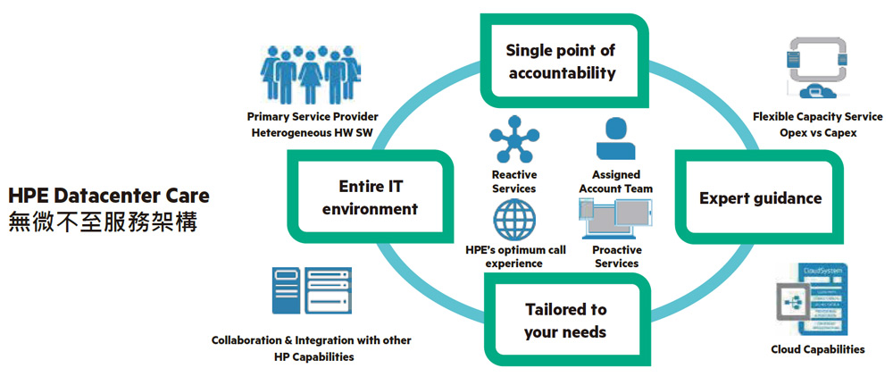

HPE Pointnext支援服務
Foundation Care 基礎架構型服務
含三年、四年及五年等三種金級服務年限選擇，基礎架構型服務服務含硬體支援，軟體支援及含協作式服務請求。
Proactive Care 積極主動型服務
積極主動型服務(Proactive Care)針對複雜環境而特別設計，它提供端對端環境的支援解決方案，範圍涵蓋伺服器、作業系統、虛擬化管理程式(hypervisor)、儲存系統、儲存區域網路(SAN)以及網路。
Proactive Care Advanced 積極主動型進階版服務
根基於HPE積極主動型服務，積極主動型進階版服務將指派HPE客戶技術支援經理(ASM)，提供客製化的技術和 操作建議，包括藉由設備連接到 HPE，即時監測和分析您的設備，我們將提供個人化的主動報告與建議，以防止您的 IT 基礎架構中存在問題。
Datacenter Care 無微不至服務

HPE Datacenter Care無微不至服務是HPE最有彈性及最高等級的服務及維護合約，藉由使用HPE的工具及相關服務以達到資料中心所需的服務等級，協助企業迎向新型態商業 (New Style of Business) 所面臨的挑戰。
多品牌軟硬體維護服務
單一合約支援全部品牌：HPE提供一套行之有效的多品牌支援服務，全力支援整個基礎架構不會受限於單一品牌的產品組合。HPE可以支援從分公司、院區到資料中心的多元品牌 IT 環境，包括伺服器、儲存設備、網路設備和軟體，HPE 及非 HPE 的產品。

IT 基礎架構自動化
DC-IA 服務目標 – 打造高速資訊環境 (High-Velocity IT)
協助 IT 開發與維運團隊協同合作 (Collaboration)
建立自動化的軟體開發，測試，組態管理與持續整合流程 (Automate Everything)
確保 DevOps 專案成功所具備的全方位服務
HPE Datacenter Care - Infrastructure Automation
Advice, Best Practices and Coaching for your Ops and Dev teams
DC-IA 服務範圍 – 以基礎架構自動化迎接 (DevOps)
建立容器生態系 (Container Ecosystem)
達成基礎架構程式化 (Infrastructure as Code)
實踐持續整合與持續交付 (CI/CD in Practice
維運支援服務
HPE Datacenter Care - Operational Support Services
HPE Datacenter Care–Operational Support Services (DC-OSS) 提供一套完整的維運服務平台，讓您可以充分利用 HPE的維運中心 (Operation Center) 所提供的全套軟體工具，管理流程與專業人員，對您的IT 基礎架構進行365天x24小時的即時監控與操作服務，讓您的 難IT資源能夠更加專注於企業本身的商業策略及核心業務發展，並因應高速IT時代所帶來的各項衝擊與挑戰。
DC-OSS 監控服務範圍
主機 、作業系統 虛擬環境、 儲存與備份 中介軟體、資料庫、 網路設備、 應用系統
更多 HPE Datacenter Care OSS 服務介紹 請造訪 : HPE.com/services/OSS
下載說明檔